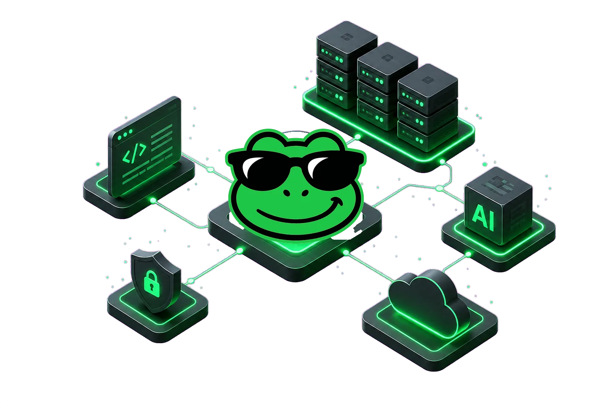
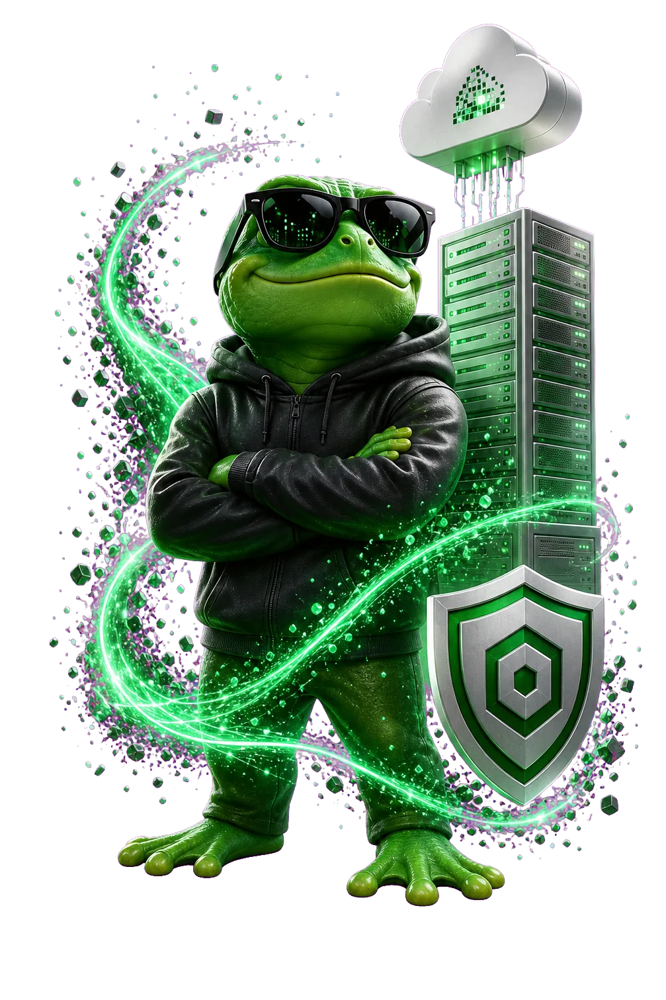

Composable infrastructure
Select cloud, runtime, data and observability capabilities as one deployable blueprint.
AI-native provisioning studio
Your infrastructure-ready copilot
Create projects, connect repositories, select runtime capabilities and follow every deployment with recovery context preserved from the first analysis to support escalation.
Explore the platform ↓
One operational surface
Repository analysis, capability choices, deployment state and support evidence stay connected through the lifecycle of the project.
Select cloud, runtime, data and observability capabilities as one deployable blueprint.
Turn repository context into practical capability parameters with reasoning attached.
Keep environments, deployment state and operational evidence connected to the project.
Block sensitive remediation paths and escalate failures with redacted evidence.
Follow status transitions, runtime events and recovery proposals from one surface.
Open support requests without rebuilding the incident timeline from memory.
01 / Create & compose
A workspace for project intent. Bring repository context, capability choices and your AI assistant into the same conversation.
Repository context. Deployable capabilities.
02 / Follow & operate
Follow execution where it happens. Deployment states, job duration and logs give operations a shared, readable timeline.
09:41:02 Repository context loaded 09:41:08 Runtime configuration validated 09:41:19 Provisioning complete 09:41:44 Health check passed
03 / Understand & improve
Read the bigger picture. Deployment volume, reliability and resource signals turn individual runs into an operational overview.
Deployment activity and platform health
Every attempt in the period, bucketed
A guided operating model
Start from a repository or define a project through a guided Studio flow.
Analysis extracts runtime needs and turns them into deployable capabilities.
Automation, runtime state and recovery signals remain tied to the project.
Safe remediation and support preserve the full execution context.

Secure by construction
Infrastructure-sensitive failures stay outside unsafe self-service paths and can be escalated with redacted project, runtime and automation evidence attached.
Calm, useful intelligence
Planning suggestions, diagnostics and support drafts remain advisory. The platform preserves context so people can review what the AI saw before trusting operational output.
Trust before access
Account, repository, runtime and support data have explicit roles in the workflow.
AI assists analysis and diagnostics while sensitive remediation remains guarded.
Operational records map to defined retention paths instead of informal platform memory.
Support escalation and administrative operations remain tied to attributable paths.
LL Platform
Compose with Studio. Follow execution with Console. Understand the whole picture with Analytics.